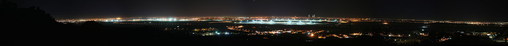
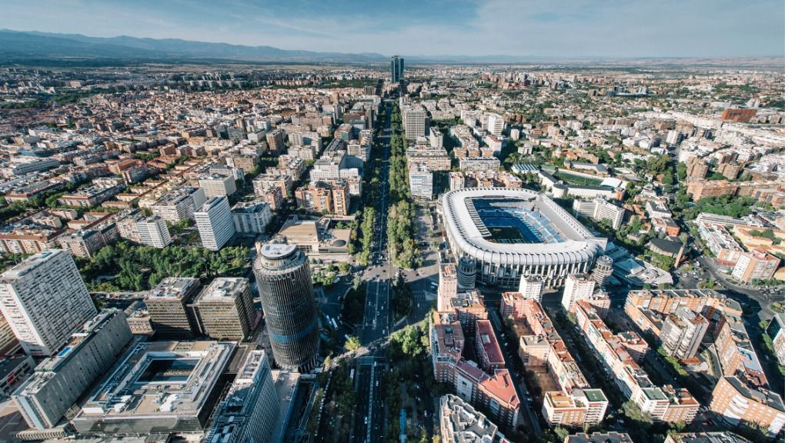
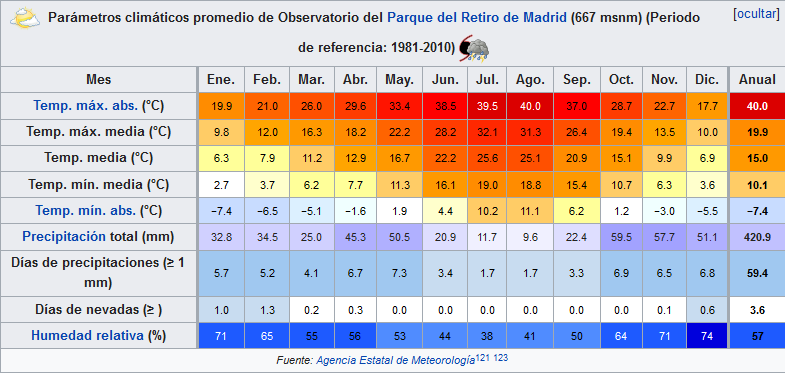

<div class="container">
    <div class="row">


<div class="container p-3 my-3 bg-light text-primary">
  <div class="font-italic">
  <h2 class="text-center">Bienvenido/a a Madrid</h2>
</div>
</div>
<div class="container">

</div>

<br>
<div class="container p-3 my-3 bg-primary text-white">
<p class="text-center"> Madrid es un municipio y
     ciudad de España. La localidad,
      con categoría histórica de villa, 
       es la capital del Estado​ y de
       la Comunidad de Madrid. Dentro 
       del término municipal de Madrid, 
       el más poblado de España, viven
        3 223 334 personas empadronadas,
         según el INE de 2018. El área 
         metropolitana asociada tiene 
         una población de 6 507 184 
         habitantes,​ por lo que es
          la tercera o cuarta de la 
          Unión Europea, según la fuente,
           tras las de París y Londres,
            y en algunas fuentes detrás
         también de la Región del Ruhr,
          así como la tercera ciudad más
           poblada de la Unión Europea,
            por detrás de Berlín y Londres. </p>
          </div>


<div class="container p-3 my-3 bg-light text-primary">
  <div class="font-italic">
  <h3 class="text-center">¿ Cuándo viajar a Madrid ?</h3>       
</div>
</div>
<div class="container">
  
  </div>
  <div class="container p-3 my-3 bg-primary text-white">    
    <p class="text-center">
  Aunque cualquier época es buena para viajar a Madrid, 
  mejor evite los meses de julio y agosto, cuando
   los termómetros se acercan a los 40 grados.
  Las estaciones con una temperatura más agradable son primavera
   y otoño, sobre todo en mayo y junio cuando los colores de los
    parques y la luz, llenan de encanto la ciudad.
  En invierno hace bastante frío y solo es recomendable para 
  disfrutar de la época navideña, cuando hay un gran encendido de luces y
   los escaparates lucen en su máximo esplendor, aunque si no gusta
  las aglomeraciones, mejor evitar la Navidad.
 </p>
</div>
</div>
</div>

